Introduction
Introduction
Je m'appelle Nicolas Carpita et vous souhaite la bienvenue sur mon portfolio. J'ai 28 ans et porte depuis toujours un intêret envers le monde du numérique. D'un naturel curieux, j'ai longtemps cherché quelle voie suivre pour construire une carrière professionnelle. C'est en 2023 que je décide, après plusieurs années à travailler en tant qu'opérateur logistique, que j'ai décidé de franchir le pas et suivre un BTS SIO (option SLAM) pour découvrir la programmation et ainsi m'ouvrir de nouvelles perspectives d'avenir.
En dehors de l'aspect professionnel, j'aime particulièrement le cinéma, les jeux vidéos et la musique, je pratique également la MAO (musique assisté par ordinateur) et suis adepte de la randonnée/trek en haute montagne.
Mon parcours
Résumé de mes experiences professionnelles et pédagogiques.
Developpeur Back-End (alternance)
2024 - 2025HYTECK Aroma-Zone
En tant que développeur Back-End en alternance, mon rôle est d'accompagner les processus métiers en optimisant ou fournissant des solutions techniques performantes.
BTS SIO (Option SLAM)
2023 - 2025IFC Avignon
BTS orienté, pour son option SLAM (Solutions Logicielles et Applications Métiers), sur la conception de services web et applicatifs au service des entreprises ainsi que sur la cybersécurité, en plus de solides connaissances générales.
Opérateur d'expédition
2018 - 2024GREENLOG Aroma-Zone
Divers postes occupés, du réapprovisionnement à la gestion de stock, en passant par la réception de marchandises et la préparation de commandes.
Formation Sound-Design
2016 - 2018Acfa Multimédia (Montpellier)
Formation orientée sur le montage et le mixage audio, étape clé de toute post-production audiovisuelle.
Baccalauréat Scientifique
2014Lycée Ismael Dauphin
Baccalauréat Scientifique, option mathématiques
Mes Compétences
Les compétences que j'ai acquises en cours de formation et en entreprise
Languages de programmation & Frameworks
![PHP Icon](data:image/svg+xml,%3c?xml%20version='1.0'%20encoding='utf-8'?%3e%3c!--%20Uploaded%20to:%20SVG%20Repo,%20www.svgrepo.com,%20Generator:%20SVG%20Repo%20Mixer%20Tools%20--%3e%3csvg%20width='800px'%20height='800px'%20viewBox='0%200%2032%2032'%20fill='none'%20xmlns='http://www.w3.org/2000/svg'%3e%3ccircle%20cx='16'%20cy='16'%20r='14'%20fill='%238892BF'/%3e%3cpath%20d='M14.4392%2010H16.1192L15.6444%2012.5242H17.154C17.9819%2012.5419%2018.5986%2012.7269%2019.0045%2013.0793C19.4184%2013.4316%2019.5402%2014.1014%2019.3698%2015.0881L18.5541%2019.4889H16.8497L17.6288%2015.2863C17.7099%2014.8457%2017.6856%2014.533%2017.5558%2014.348C17.426%2014.163%2017.146%2014.0705%2016.7158%2014.0705L15.3644%2014.0573L14.3661%2019.4889H12.6861L14.4392%2010Z'%20fill='white'/%3e%3cpath%20fill-rule='evenodd'%20clip-rule='evenodd'%20d='M6.74092%2012.5243H10.0036C10.9612%2012.533%2011.6552%2012.8327%2012.0854%2013.4229C12.5156%2014.0132%2012.6576%2014.8193%2012.5115%2015.8414C12.4548%2016.3085%2012.3289%2016.7665%2012.1341%2017.2159C11.9474%2017.6652%2011.6878%2018.0704%2011.355%2018.4317C10.9491%2018.8898%2010.5149%2019.1805%2010.0523%2019.304C9.58969%2019.4274%209.11076%2019.489%208.61575%2019.489H7.15484L6.69222%2022H5L6.74092%2012.5243ZM7.43485%2017.9956L8.16287%2014.0441H8.40879C8.49815%2014.0441%208.5914%2014.0396%208.6888%2014.0309C9.33817%2014.0221%209.87774%2014.0882%2010.308%2014.2291C10.7462%2014.37%2010.8923%2014.9031%2010.7462%2015.8282C10.5678%2016.9296%2010.2186%2017.5727%209.69926%2017.7577C9.1799%2017.934%208.53053%2018.0176%207.75138%2018.0088H7.58094C7.53224%2018.0088%207.48355%2018.0043%207.43485%2017.9956Z'%20fill='white'/%3e%3cpath%20fill-rule='evenodd'%20clip-rule='evenodd'%20d='M24.4365%2012.5243H21.1738L19.4329%2022H21.1251L21.5878%2019.489H23.0487C23.5437%2019.489%2024.0226%2019.4274%2024.4852%2019.304C24.9479%2019.1805%2025.382%2018.8898%2025.7879%2018.4317C26.1207%2018.0704%2026.3803%2017.6652%2026.567%2017.2159C26.7618%2016.7665%2026.8877%2016.3085%2026.9444%2015.8414C27.0905%2014.8193%2026.9486%2014.0132%2026.5183%2013.4229C26.0881%2012.8327%2025.3942%2012.533%2024.4365%2012.5243ZM22.5958%2014.0441L21.8678%2017.9956C21.9165%2018.0043%2021.9652%2018.0088%2022.0139%2018.0088H22.1843C22.9635%2018.0176%2023.6128%2017.934%2024.1322%2017.7577C24.6515%2017.5727%2025.0007%2016.9296%2025.1792%2015.8282C25.3253%2014.9031%2025.1792%2014.37%2024.7409%2014.2291C24.3107%2014.0882%2023.7711%2014.0221%2023.1217%2014.0309C23.0243%2014.0396%2022.9311%2014.0441%2022.8417%2014.0441H22.5958Z'%20fill='white'/%3e%3c/svg%3e)
PHP
![Csharp Icon](data:image/svg+xml,%3c?xml%20version='1.0'%20encoding='utf-8'?%3e%3c!--%20Uploaded%20to:%20SVG%20Repo,%20www.svgrepo.com,%20Generator:%20SVG%20Repo%20Mixer%20Tools%20--%3e%3csvg%20width='800px'%20height='800px'%20viewBox='0%200%2032%2032'%20fill='none'%20xmlns='http://www.w3.org/2000/svg'%3e%3cpath%20d='M27.6947%2022.9999C27.883%2022.6617%2028%2022.2807%2028%2021.9385V10.0613C28%209.71913%2027.8831%209.33818%2027.6947%209L16%2016L27.6947%2022.9999Z'%20fill='%237F3A86'/%3e%3cpath%20d='M17.0395%2029.7433L26.9611%2023.8047C27.2469%2023.6336%2027.5067%2023.3382%2027.695%2023L16.0003%2016L4.30566%2023C4.49398%2023.3382%204.75382%2023.6337%205.03955%2023.8047L14.9611%2029.7433C15.5326%2030.0855%2016.468%2030.0855%2017.0395%2029.7433Z'%20fill='%23662579'/%3e%3cpath%20d='M27.6947%208.99996C27.5064%208.6617%2027.2465%208.36629%2026.9608%208.19521L17.0392%202.25662C16.4677%201.91446%2015.5323%201.91446%2014.9608%202.25662L5.03922%208.19521C4.46761%208.53729%204%209.37709%204%2010.0613V21.9386C4%2022.2807%204.11694%2022.6618%204.30533%2023L16%2016L27.6947%208.99996Z'%20fill='%239A5196'/%3e%3cpath%20d='M16.0385%2024C11.6061%2024%208%2020.4112%208%2016C8%2011.5888%2011.6061%208%2016.0385%208C18.8458%208%2021.4674%209.47569%2022.919%2011.8618L19.4765%2013.9265C18.7492%2012.736%2017.4399%2012%2016.0385%2012C13.8222%2012%2012.0193%2013.7944%2012.0193%2016C12.0193%2018.2056%2013.8222%2020%2016.0385%2020C17.4362%2020%2018.7421%2019.2681%2019.4707%2018.0832L22.9205%2020.1359C21.4692%2022.5234%2018.8467%2024%2016.0385%2024Z'%20fill='white'/%3e%3cpath%20fill-rule='evenodd'%20clip-rule='evenodd'%20d='M25.0001%2013V13.9974H22.9999V13H22.0001V13.9974H21V15H22.0001V16.9948H21V18H22.0001V19H22.9999L23%2018H25.0001V19H25.9999V18H27V17H25.9999V15H27V13.9974H25.9999V13H25.0001ZM25.0001%2017V15H22.9999V16.9948L25.0001%2017Z'%20fill='white'/%3e%3c/svg%3e)
C#
%20scale(189.38%20189.81)'%20gradientUnits='userSpaceOnUse'%3e%3cstop%20offset='0'%20stop-color='%23387eb8'/%3e%3cstop%20offset='1'%20stop-color='%23366994'/%3e%3c/linearGradient%3e%3clinearGradient%20id='b'%20x1='-133.575'%20y1='-203.203'%20x2='-133.495'%20y2='-203.133'%20gradientTransform='translate(25309.061%2038583.42)%20scale(189.38%20189.81)'%20gradientUnits='userSpaceOnUse'%3e%3cstop%20offset='0'%20stop-color='%23ffe052'/%3e%3cstop%20offset='1'%20stop-color='%23ffc331'/%3e%3c/linearGradient%3e%3c/defs%3e%3ctitle%3efile_type_python%3c/title%3e%3cpath%20d='M15.885,2.1c-7.1,0-6.651,3.07-6.651,3.07V8.36h6.752v1H6.545S2,8.8,2,16.005s4.013,6.912,4.013,6.912H8.33V19.556s-.13-4.013,3.9-4.013h6.762s3.772.06,3.772-3.652V5.8s.572-3.712-6.842-3.712h0ZM12.153,4.237a1.214,1.214,0,1,1-1.183,1.244v-.02a1.214,1.214,0,0,1,1.214-1.214h0Z'%20style='fill:url(%23a)'/%3e%3cpath%20d='M16.085,29.91c7.1,0,6.651-3.08,6.651-3.08V23.65H15.985v-1h9.47S30,23.158,30,15.995s-4.013-6.912-4.013-6.912H23.64V12.4s.13,4.013-3.9,4.013H12.975S9.2,16.356,9.2,20.068V26.2s-.572,3.712,6.842,3.712h.04Zm3.732-2.147A1.214,1.214,0,1,1,21,26.519v.03a1.214,1.214,0,0,1-1.214,1.214h.03Z'%20style='fill:url(%23b)'/%3e%3c/svg%3e)
Python
MySQL
SQL Server

HTML 5

CSS 3
![js Icon](data:image/svg+xml,%3c!DOCTYPE%20svg%20PUBLIC%20'-//W3C//DTD%20SVG%201.1//EN'%20'http://www.w3.org/Graphics/SVG/1.1/DTD/svg11.dtd'%3e%3c!--%20Uploaded%20to:%20SVG%20Repo,%20www.svgrepo.com,%20Transformed%20by:%20SVG%20Repo%20Mixer%20Tools%20--%3e%3csvg%20width='800px'%20height='800px'%20viewBox='0%200%2032%2032'%20fill='none'%20xmlns='http://www.w3.org/2000/svg'%3e%3cg%20id='SVGRepo_bgCarrier'%20stroke-width='0'/%3e%3cg%20id='SVGRepo_tracerCarrier'%20stroke-linecap='round'%20stroke-linejoin='round'/%3e%3cg%20id='SVGRepo_iconCarrier'%3e%3crect%20x='2'%20y='2'%20width='28'%20height='28'%20fill='%23FFCA28'/%3e%3cpath%20d='M19%2025.2879L21.0615%2023.9237C21.2231%2024.4313%2022.2462%2025.6368%2023.5385%2025.6368C24.8308%2025.6368%2025.4308%2024.931%2025.4308%2024.463C25.4308%2023.1878%2024.1112%2022.7382%2023.4774%2022.5223C23.374%2022.4871%2023.289%2022.4581%2023.2308%2022.4328C23.2009%2022.4198%2023.1558%2022.4025%2023.0979%2022.3804C22.393%2022.1111%2019.7923%2021.1175%2019.7923%2018.2373C19.7923%2015.065%2022.8538%2014.7002%2023.5462%2014.7002C23.9991%2014.7002%2026.1769%2014.7557%2027.2615%2016.7939L25.2615%2018.1898C24.8231%2017.3015%2024.0946%2017.0081%2023.6462%2017.0081C22.5385%2017.0081%2022.3077%2017.8201%2022.3077%2018.1898C22.3077%2019.227%2023.5112%2019.6919%2024.5273%2020.0844C24.7932%2020.1871%2025.0462%2020.2848%2025.2615%2020.3866C26.3692%2020.91%2028%2021.7666%2028%2024.463C28%2025.8136%2026.8672%2028.0002%2024.0154%2028.0002C20.1846%2028.0002%2019.1692%2025.7003%2019%2025.2879Z'%20fill='%23ffffff'/%3e%3cpath%20d='M9%2025.5587L11.1487%2024.1953C11.317%2024.7026%2011.9713%2025.638%2012.9205%2025.638C13.8698%2025.638%2014.3557%2024.663%2014.3557%2024.1953V15.0002H16.9982V24.1953C17.041%2025.4636%2016.3376%2028.0002%2013.2332%2028.0002C10.379%2028.0002%209.19242%2026.3039%209%2025.5587Z'%20fill='%23ffffff'/%3e%3c/g%3e%3c/svg%3e)
Javascript
Laravel

AlpineJS
![dotnet Icon](data:image/svg+xml,%3c!DOCTYPE%20svg%20PUBLIC%20'-//W3C//DTD%20SVG%201.1//EN'%20'http://www.w3.org/Graphics/SVG/1.1/DTD/svg11.dtd'%3e%3c!--%20Uploaded%20to:%20SVG%20Repo,%20www.svgrepo.com,%20Transformed%20by:%20SVG%20Repo%20Mixer%20Tools%20--%3e%3csvg%20width='800px'%20height='800px'%20viewBox='0%200%2064%2064'%20id='Layer_1'%20data-name='Layer%201'%20xmlns='http://www.w3.org/2000/svg'%20fill='%23000000'%3e%3cg%20id='SVGRepo_bgCarrier'%20stroke-width='0'/%3e%3cg%20id='SVGRepo_tracerCarrier'%20stroke-linecap='round'%20stroke-linejoin='round'/%3e%3cg%20id='SVGRepo_iconCarrier'%3e%3cdefs%3e%3cstyle%3e.cls-1{fill:%235c2d91;}.cls-2,.cls-3{fill:%23ffffff;}.cls-2{opacity:0.1;}%3c/style%3e%3c/defs%3e%3ctitle%3elogo_NET%3c/title%3e%3ccircle%20class='cls-1'%20cx='32'%20cy='32'%20r='32'/%3e%3cpath%20class='cls-2'%20d='M9.82,9A32,32,0,1,0,55,54.18Z'/%3e%3cpath%20class='cls-3'%20d='M7.4,41.25a1.35,1.35,0,0,1-1-.42,1.38,1.38,0,0,1-.41-1,1.4,1.4,0,0,1,.41-1,1.34,1.34,0,0,1,1-.43,1.37,1.37,0,0,1,1,.43,1.39,1.39,0,0,1,.42,1,1.37,1.37,0,0,1-.42,1A1.38,1.38,0,0,1,7.4,41.25Z'/%3e%3cpath%20class='cls-3'%20d='M27.27,41H24.65L15.28,26.46a6.06,6.06,0,0,1-.58-1.14h-.08a18.71,18.71,0,0,1,.1,2.5V41H12.59V22.77h2.77l9.12,14.28q.57.89.74,1.22h.05a19.29,19.29,0,0,1-.13-2.68V22.77h2.13Z'/%3e%3cpath%20class='cls-3'%20d='M41.69,41H32V22.77h9.24V24.7H34.18v6.06h6.58v1.92H34.18V39h7.52Z'/%3e%3cpath%20class='cls-3'%20d='M56,24.7H50.7V41H48.57V24.7H43.33V22.77H56Z'/%3e%3c/g%3e%3c/svg%3e)
.NET

TailwindCSS
Logiciels & outils
![VS Code Icon](data:image/svg+xml,%3c?xml%20version='1.0'%20encoding='utf-8'?%3e%3c!--%20Uploaded%20to:%20SVG%20Repo,%20www.svgrepo.com,%20Generator:%20SVG%20Repo%20Mixer%20Tools%20--%3e%3csvg%20width='800px'%20height='800px'%20viewBox='0%200%2032%2032'%20xmlns='http://www.w3.org/2000/svg'%3e%3ctitle%3efile_type_vscode%3c/title%3e%3cpath%20d='M29.01,5.03,23.244,2.254a1.742,1.742,0,0,0-1.989.338L2.38,19.8A1.166,1.166,0,0,0,2.3,21.447c.025.027.05.053.077.077l1.541,1.4a1.165,1.165,0,0,0,1.489.066L28.142,5.75A1.158,1.158,0,0,1,30,6.672V6.605A1.748,1.748,0,0,0,29.01,5.03Z'%20style='fill:%230065a9'/%3e%3cpath%20d='M29.01,26.97l-5.766,2.777a1.745,1.745,0,0,1-1.989-.338L2.38,12.2A1.166,1.166,0,0,1,2.3,10.553c.025-.027.05-.053.077-.077l1.541-1.4A1.165,1.165,0,0,1,5.41,9.01L28.142,26.25A1.158,1.158,0,0,0,30,25.328V25.4A1.749,1.749,0,0,1,29.01,26.97Z'%20style='fill:%23007acc'/%3e%3cpath%20d='M23.244,29.747a1.745,1.745,0,0,1-1.989-.338A1.025,1.025,0,0,0,23,28.684V3.316a1.024,1.024,0,0,0-1.749-.724,1.744,1.744,0,0,1,1.989-.339l5.765,2.772A1.748,1.748,0,0,1,30,6.6V25.4a1.748,1.748,0,0,1-.991,1.576Z'%20style='fill:%231f9cf0'/%3e%3c/svg%3e)
VS Code
Visual Studio
JetBrains Rider
XAMPP
'%20fill='%23ffffff'%3e%3cg%20id='icons'%20transform='translate(56.000000,%20160.000000)'%3e%3cpath%20d='M94,7399%20C99.523,7399%20104,7403.59%20104,7409.253%20C104,7413.782%20101.138,7417.624%2097.167,7418.981%20C96.66,7419.082%2096.48,7418.762%2096.48,7418.489%20C96.48,7418.151%2096.492,7417.047%2096.492,7415.675%20C96.492,7414.719%2096.172,7414.095%2095.813,7413.777%20C98.04,7413.523%20100.38,7412.656%20100.38,7408.718%20C100.38,7407.598%2099.992,7406.684%2099.35,7405.966%20C99.454,7405.707%2099.797,7404.664%2099.252,7403.252%20C99.252,7403.252%2098.414,7402.977%2096.505,7404.303%20C95.706,7404.076%2094.85,7403.962%2094,7403.958%20C93.15,7403.962%2092.295,7404.076%2091.497,7404.303%20C89.586,7402.977%2088.746,7403.252%2088.746,7403.252%20C88.203,7404.664%2088.546,7405.707%2088.649,7405.966%20C88.01,7406.684%2087.619,7407.598%2087.619,7408.718%20C87.619,7412.646%2089.954,7413.526%2092.175,7413.785%20C91.889,7414.041%2091.63,7414.493%2091.54,7415.156%20C90.97,7415.418%2089.522,7415.871%2088.63,7414.304%20C88.63,7414.304%2088.101,7413.319%2087.097,7413.247%20C87.097,7413.247%2086.122,7413.234%2087.029,7413.87%20C87.029,7413.87%2087.684,7414.185%2088.139,7415.37%20C88.139,7415.37%2088.726,7417.2%2091.508,7416.58%20C91.513,7417.437%2091.522,7418.245%2091.522,7418.489%20C91.522,7418.76%2091.338,7419.077%2090.839,7418.982%20C86.865,7417.627%2084,7413.783%2084,7409.253%20C84,7403.59%2088.478,7399%2094,7399'%20id='github-[%23142]'%3e%3c/path%3e%3c/g%3e%3c/g%3e%3c/g%3e%3c/g%3e%3c/svg%3e)
Github
Postman
![VS Code Icon](data:image/svg+xml,%3c!DOCTYPE%20svg%20PUBLIC%20'-//W3C//DTD%20SVG%201.1//EN'%20'http://www.w3.org/Graphics/SVG/1.1/DTD/svg11.dtd'%3e%3c!--%20Uploaded%20to:%20SVG%20Repo,%20www.svgrepo.com,%20Transformed%20by:%20SVG%20Repo%20Mixer%20Tools%20--%3e%3csvg%20width='800px'%20height='800px'%20viewBox='0%200%201024%201024'%20xmlns='http://www.w3.org/2000/svg'%20fill='%23000000'%3e%3cg%20id='SVGRepo_bgCarrier'%20stroke-width='0'/%3e%3cg%20id='SVGRepo_tracerCarrier'%20stroke-linecap='round'%20stroke-linejoin='round'/%3e%3cg%20id='SVGRepo_iconCarrier'%3e%3ccircle%20cx='512'%20cy='512'%20r='512'%20style='fill:%230078d4'/%3e%3cpath%20d='M729.08%20730.5a33.88%2033.88%200%200%200%2032.13-44.76L623.89%20279.07A33.88%2033.88%200%200%200%20591.81%20256H432.17a33.88%2033.88%200%200%200-32.09%2023.07L262.8%20685.76a33.88%2033.88%200%200%200%2032.13%2044.74h99.16a33.88%2033.88%200%200%200%2032.11-23.07l20.44-60.49%20103.46%2076.87a33.85%2033.85%200%200%200%2020.21%206.69M505.8%20468.4%20581.6%20693a11.29%2011.29%200%200%201-10.67%2014.91h-.63a11.29%2011.29%200%200%201-6.74-2.22L369.32%20561.38h101.51m132%20146.54a33.54%2033.54%200%200%200%20.15-22.13L465.77%20279.07l-.15-.42h126.21a11.29%2011.29%200%200%201%2010.71%207.66L739.79%20693a11.29%2011.29%200%200%201-7.07%2014.31'%20style='fill:%23fff'/%3e%3c/g%3e%3c/svg%3e)
Microsoft Azure

TablePlus
'%3e%3cg%20id='g10'%20transform='scale(0.1)'%3e%3cpath%20class='forest-7'%20style='fill:%20rgb(11,%2035,%2025);%20fill-opacity:%201;%20fill-rule:%20nonzero;%20stroke:%20none;'%20id='path60'%20d='M%2024979%2010072.6%20C%2024495.3%209938.53%2024011%209804.58%2023534.3%209666.21%20C%2023514.4%209663.75%2023494.9%209661.37%2023475.2%209658.99%20C%2023401%209634.02%2023326.4%209608.68%2023251.7%209583.13%20C%2022797%209448.38%2022350.6%209308.64%2021921.1%209158.94%20C%2021554%209031.12%2021210.5%208893.84%2020870.8%208754.82%20C%2020871%208754.9%2020871.1%208754.9%2020871.2%208754.96%20C%2020532.5%208616.24%2020197.5%208475.71%2019846.8%208340.95%20C%2019361.9%208165.56%2018881.3%208021.21%2018401%207903.34%20C%2018288.8%207882.77%2018174.9%207864.29%2018057.5%207851.31%20C%2018063.5%207850.8%2018070.6%207850.44%2018079.9%207851.23%20C%2018142.5%207855.49%2018204%207862.49%2018264.9%207870.58%20C%2017958.9%207798.69%2017652.6%207738.2%2017345.4%207687.54%20C%2016778.7%207594.07%2016208.1%207534.44%2015626.8%207505.79%20C%2015220.4%207485.72%2014808.5%207480.74%2014389.3%207488.47%20C%2014051.5%207494.67%2013708.6%207509.4%2013359.7%207531.78%20C%2013236.6%207553.43%2013113.3%207574.87%2012986.5%207591.25%20C%2012918.1%207600.12%2012849%207607.49%2012779.7%207614.35%20C%2012621.8%207650.86%2012460.7%207682.19%2012296.8%207709.11%20C%2012175.4%207729.03%2012052.8%207747.01%2011929%207762.89%20C%2011560.5%207810.09%2011183.6%207842.28%2010808.4%207872.52%20C%2010324.6%207911.5%209849.85%207954.88%209382.61%208018.11%20C%209115.79%208061.34%208844.5%208106.52%208568.34%208153.59%20C%208482.3%208170.77%208396.66%208188.45%208311.59%208206.85%20C%208483.35%208222.29%208655.69%208235.79%208828.75%208247.2%20C%208375.56%208318.51%207916.43%208386.21%207457.38%208439.12%20C%207090.63%208481.2%206728.68%208523.42%206374.51%208579.79%20C%206339.2%208585.42%206303.97%208591.2%206268.74%208597.11%20C%206229.86%208603.68%206191.22%208610.54%206152.58%208617.47%20C%206123.11%208622.74%206093.73%208628.01%206064.34%208633.56%20C%206019.13%208642.15%205974.16%208651.24%205929.18%208660.49%20C%205905.64%208665.32%205882.02%208669.94%205858.56%208674.92%20C%205790.21%208689.58%205722.11%208704.94%205654.41%208721.48%20C%205111.75%208853.78%204588.17%209006.14%204025.55%209116.87%20C%203726.83%209175.62%203423.39%209227.15%203129.79%209292.69%20C%202864.58%209351.66%202621.22%209434.16%202353.34%209490.75%20C%202075.08%209549.5%201795.59%209598.15%201510.42%209634.45%20C%201364.55%209653.08%201217.06%209668.38%201067.62%209680.14%20C%20922.883%209691.54%20776.113%209699.7%20626.914%209704.18%20C%20300.188%209714.07%20-32.059%209709.16%20-359.2%209706.78%20L%20-359.2%209407.67%20L%20-359.2%208891.68%20L%20-359.2%208120.39%20L%20-359.2%207127.36%20L%20-359.2%206842.55%20L%20-359.2%206402.63%20L%20-359.2%205922.14%20L%20-359.2%205102.93%20L%20-359.2%205046.27%20L%208642.87%205046.27%20L%209082.02%205046.27%20L%209527.75%205046.27%20L%209701.88%205046.27%20L%209866.17%205046.27%20L%2014974%205046.27%20L%2022451.9%205046.27%20C%2022508.1%205052.04%2022561.5%205059.62%2022612.7%205068.35%20L%2028098.6%205060.05%20L%2028098.6%205166.37%20L%2028098.6%206781.49%20L%2028098.6%206844.57%20L%2028098.6%206914.3%20L%2028098.6%207202.14%20L%2028098.6%207338.49%20L%2028098.6%208076.72%20L%2028098.6%208312.88%20L%2028098.6%208464.24%20L%2028098.6%208732.81%20L%2028098.6%208862.01%20L%2028098.6%209991.8%20L%2028098.6%2010196.9%20L%2028098.6%2010229.3%20L%2028098.6%2010546.7%20L%2028098.6%2010716.5%20C%2027020%2010538.8%2025949.9%2010341.6%2024979%2010072.6'%20/%3e%3c/g%3e%3c/g%3e%3c/svg%3e)
'%3e%3cg%20id='g10'%20transform='scale(0.1)'%3e%3cpath%20class='forest-5'%20style='fill:%20rgb(17,%2045,%2034);%20fill-opacity:%201;%20fill-rule:%20nonzero;%20stroke:%20none;'%20id='path56'%20d='M%2022129.8%209498.4%20C%2021815.4%209477.17%2021507.8%209441.15%2021191.3%209427.15%20C%2021127.5%209424.41%2021063.5%209422.25%2020999.6%209420.16%20C%2020840.5%209407.23%2020682%209395.83%2020526.8%209383.2%20C%2019889.4%209331.6%2019249.3%209290.95%2018610.1%209246.78%20C%2017960.9%209201.89%2017314.5%209142.27%2016663%209106.33%20C%2016402.9%209092.04%2016141.2%209073.63%2015879.4%209069.95%20C%2015653.4%209066.85%2015419.3%209071.75%2015209.8%209120.25%20C%2015195%209123.72%2015198.7%209134.33%2015209.8%209138.37%20C%2015325.4%209178.86%2015442.4%209218.71%2015560%209257.61%20C%2015430.8%209236.97%2015300.9%209218.71%2015170.6%209202.18%20C%2014911.8%209138.67%2014625.7%209125.09%2014332.2%209126.9%20C%2013986.5%209108.13%2013637.2%209103.65%2013285.5%209114.12%20C%2013182.3%209117.15%2013079.1%209121.41%2012976.1%209126.4%20C%2011848.1%209066.63%2010719.2%208910.44%209584.66%209007.74%20C%208984.45%209059.34%208466.8%209207.16%207917.89%209333.62%20C%207738.98%209374.75%207556.66%209407.67%207371.75%209434.38%20C%207367.69%209435.24%207363.79%209436.1%207359.65%209436.83%20C%207350.64%209438.13%207341.39%209438.99%207332.37%209440.22%20C%207245.84%209452.28%207158.82%209463.25%207071.15%209472.34%20C%207069.78%209472.55%207068.39%209472.7%207067.01%209472.84%20C%206978.05%209482.08%206888.43%209489.44%206798.33%209495.65%20C%206772.68%209497.53%206746.78%209498.98%206720.97%209500.49%20C%206654.73%209504.6%206588.08%209507.85%206521.27%209510.45%20C%206493.75%209511.53%206466.24%209512.69%206438.64%209513.48%20C%206348.61%209516.15%206258.27%209518.02%206167.27%209518.1%20C%206151.52%209518.1%206145.52%209525.68%206148.93%209531.74%20C%205624.05%209557.44%205100.22%209588.62%204576.24%209618.72%20C%203926.35%209656.1%203279.31%209698.19%202624.23%209681.58%20C%202497.92%209678.41%202371.53%209674.51%202245.14%209670.25%20C%202186.45%209668.16%202127.92%209665.63%202069.32%209663.39%20C%202021.09%209661.45%201972.96%209659.21%201924.74%209657.04%20C%201786.34%209650.83%201648.26%209643.18%201510.42%209634.45%20C%201795.59%209598.15%202075.08%209549.5%202353.34%209490.75%20C%202621.22%209434.16%202864.58%209351.66%203129.79%209292.69%20C%203423.39%209227.15%203726.83%209175.62%204025.55%209116.87%20C%204588.17%209006.14%205111.75%208853.78%205654.41%208721.48%20C%205722.11%208704.94%205790.21%208689.58%205858.56%208674.92%20C%205882.02%208669.94%205905.64%208665.32%205929.18%208660.49%20C%205974.16%208651.24%206019.13%208642.15%206064.34%208633.56%20C%206093.73%208628.01%206123.11%208622.74%206152.58%208617.47%20C%206191.22%208610.54%206229.86%208603.68%206268.74%208597.11%20C%206303.97%208591.2%206339.2%208585.42%206374.51%208579.79%20C%206728.68%208523.42%207090.63%208481.2%207457.38%208439.12%20C%207395.04%208446.19%207332.94%208453.26%207270.84%208460.49%20C%207611.7%208369.39%207957.34%208283.43%208311.59%208206.85%20C%208396.66%208188.45%208482.3%208170.77%208568.34%208153.59%20C%208844.5%208106.52%209115.79%208061.34%209382.61%208018.11%20C%209849.85%207954.88%2010324.6%207911.5%2010808.4%207872.52%20C%2011183.6%207842.28%2011560.5%207810.09%2011929%207762.89%20C%2012052.8%207747.01%2012175.4%207729.03%2012296.8%207709.11%20C%2012460.7%207682.19%2012621.8%207650.86%2012779.7%207614.35%20C%2012849%207607.49%2012918.1%207600.12%2012986.5%207591.25%20C%2013113.3%207574.87%2013236.6%207553.43%2013359.7%207531.78%20C%2013708.6%207509.4%2014051.5%207494.67%2014389.3%207488.47%20C%2014808.5%207480.74%2015220.4%207485.72%2015626.8%207505.79%20C%2016208.1%207534.44%2016778.7%207594.07%2017345.4%207687.54%20C%2017652.6%207738.2%2017958.9%207798.69%2018264.9%207870.58%20C%2018204%207862.49%2018142.5%207855.49%2018079.9%207851.23%20C%2018070.6%207850.44%2018063.5%207850.8%2018057.5%207851.31%20C%2018174.9%207864.29%2018288.8%207882.77%2018401%207903.34%20C%2018881.3%208021.21%2019361.9%208165.56%2019846.8%208340.95%20C%2020197.5%208475.71%2020532.5%208616.24%2020871.2%208754.96%20C%2020871.1%208754.9%2020871%208754.9%2020870.8%208754.82%20C%2021210.5%208893.84%2021554%209031.12%2021921.1%209158.94%20C%2022350.6%209308.64%2022797%209448.38%2023251.7%209583.13%20C%2023326.4%209608.68%2023401%209634.02%2023475.2%209658.99%20C%2022722.7%209566.68%2022191%209502.5%2022129.8%209498.4'%20/%3e%3c/g%3e%3c/g%3e%3c/svg%3e) 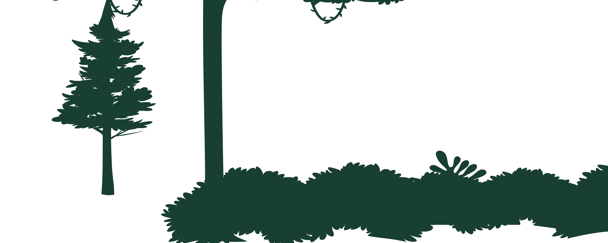
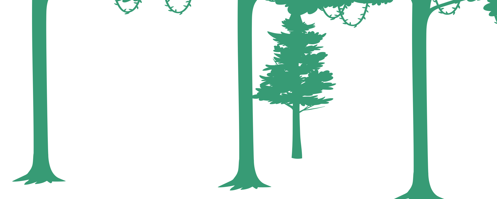
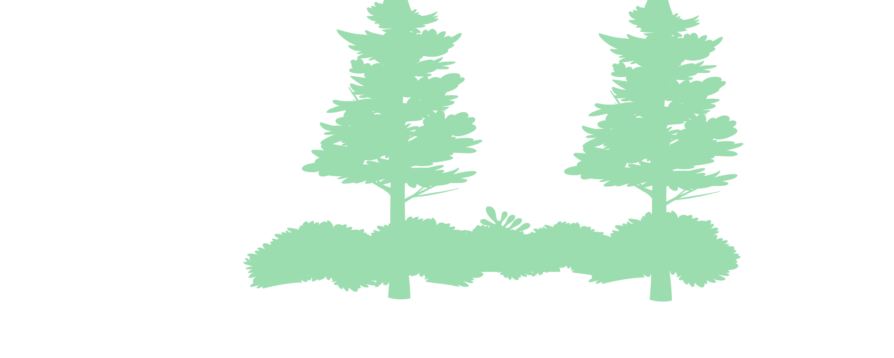
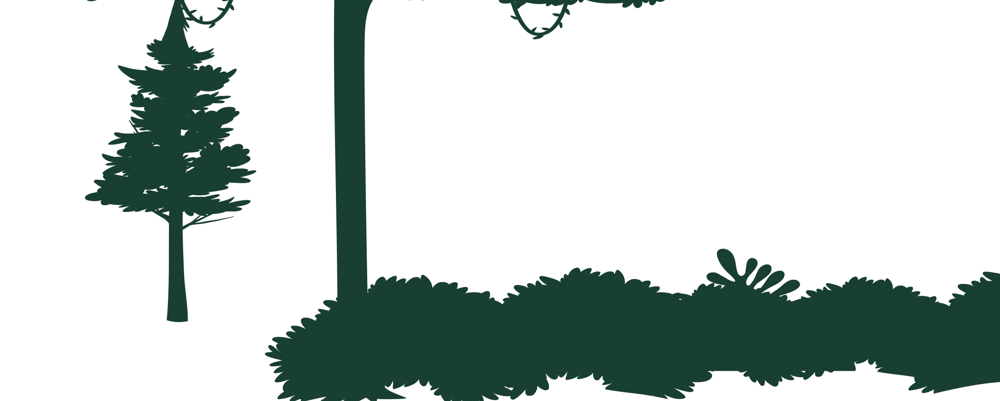
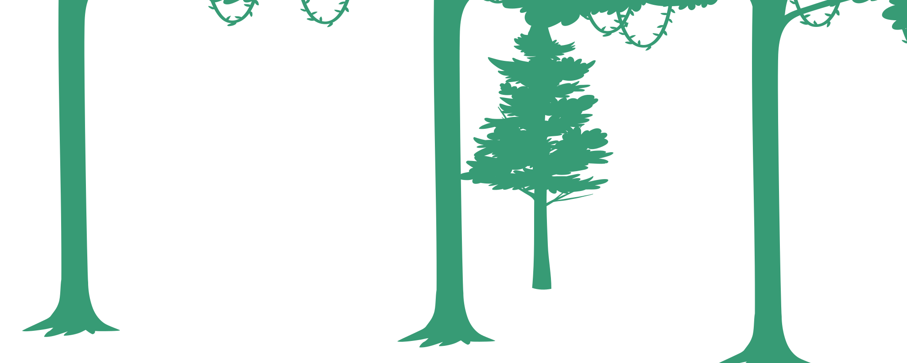
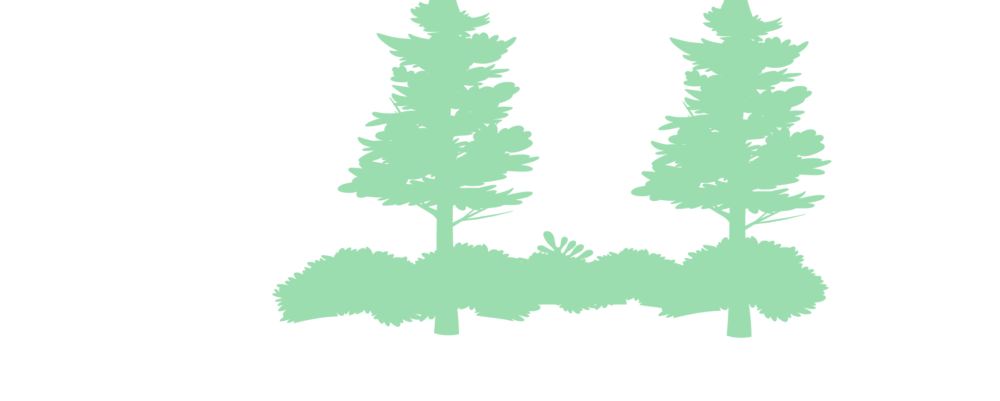
'%3e%3cg%20id='g10'%20transform='scale(0.1)'%3e%3cpath%20style='fill:%230b2319;fill-opacity:1;fill-rule:nonzero;stroke:none'%20id='path60'%20d='m%2024979,4652.3%20c%20-483.7,-185.8%20-968,-371.4%20-1444.7,-563.1%20-19.9,-3.4%20-39.4,-6.7%20-59.1,-10%20-74.2,-34.6%20-148.8,-69.7%20-223.5,-105.1%20-454.7,-186.7%20-901.1,-380.3%20-1330.6,-587.7%20-367.1,-177.1%20-710.6,-367.3%20-1050.3,-559.9%200.2,0.1%200.3,0.1%200.4,0.2%20-338.7,-192.2%20-673.7,-386.9%20-1024.4,-573.6%20-484.9,-243%20-965.5,-443%20-1445.8,-606.3%20-112.2,-28.5%20-226.1,-54.1%20-343.5,-72.1%206,-0.7%2013.1,-1.2%2022.4,-0.1%2062.6,5.9%20124.1,15.6%20185,26.8%20-306,-99.6%20-612.3,-183.4%20-919.5,-253.6%20-566.7,-129.5%20-1137.3,-212.1%20-1718.6,-251.8%20-406.4,-27.8%20-818.3,-34.7%20-1237.5,-24%20-337.8,8.6%20-680.7,29%20-1029.6,60%20-123.1,30%20-246.4,59.7%20-373.2,82.4%20-68.4,12.3%20-137.5,22.5%20-206.8,32%20-157.9,50.6%20-319,94%20-482.9,131.3%20-121.4,27.6%20-244,52.5%20-367.8,74.5%20-368.5,65.4%20-745.4,110%20-1120.6,151.9%20-483.8,54%20-958.55,114.1%20-1425.79,201.7%20-266.82,59.9%20-538.11,122.5%20-814.27,187.7%20-86.04,23.8%20-171.68,48.3%20-256.75,73.8%20171.76,21.4%20344.1,40.1%20517.16,55.9%20-453.19,98.8%20-912.32,192.6%20-1371.37,265.9%20-366.75,58.3%20-728.7,116.8%20-1082.87,194.9%20-35.31,7.8%20-70.54,15.8%20-105.77,24%20-38.88,9.1%20-77.52,18.6%20-116.16,28.2%20-29.47,7.3%20-58.85,14.6%20-88.24,22.3%20-45.21,11.9%20-90.18,24.5%20-135.16,37.3%20-23.54,6.7%20-47.16,13.1%20-70.62,20%20-68.35,20.3%20-136.45,41.6%20-204.15,64.5%20-542.66,183.3%20-1066.24,394.4%20-1628.86,547.8%20-298.72,81.4%20-602.16,152.8%20-895.76,243.6%20-265.21,81.7%20-508.57,196%20-776.45,274.4%20-278.26,81.4%20-557.75,148.8%20-842.92,199.1%20-145.87,25.8%20-293.36,47%20-442.8,63.3%20-144.737,15.8%20-291.507,27.1%20-440.706,33.3%20-326.726,13.7%20-658.9726,6.9%20-986.113,3.6%20V%203731%203016.1%201947.5%20571.699%20177.102%20v%20-609.5%20-665.702%20-1135%20-78.5%20h%209002.069%20439.15%20445.73%20174.13%20164.29%205107.83%207477.9%20c%2056.2,8%20109.6,18.5%20160.8,30.6%20l%205485.9,-11.5%20v%20147.3%202237.7%2087.402%2096.602%20398.797%20188.898%201022.801%20327.2%20209.7%20372.1%20179%201565.3%20284.1%2045%20439.7%20235.3%20C%2027020,5298.2%2025949.9,5025%2024979,4652.3'%20/%3e%3c/g%3e%3c/g%3e%3c/svg%3e)
'%3e%3cg%20id='g10'%20transform='scale(0.1)'%3e%3cpath%20style='fill:%23112d22;fill-opacity:1;fill-rule:nonzero;stroke:none'%20id='path56'%20d='m%2022129.8,3856.7%20c%20-314.4,-29.4%20-622,-79.3%20-938.5,-98.7%20-63.8,-3.8%20-127.8,-6.8%20-191.7,-9.7%20-159.1,-17.9%20-317.6,-33.7%20-472.8,-51.2%20-637.4,-71.5%20-1277.5,-127.8%20-1916.7,-189%20-649.2,-62.2%20-1295.6,-144.8%20-1947.1,-194.6%20-260.1,-19.8%20-521.8,-45.3%20-783.6,-50.4%20-226,-4.3%20-460.1,2.5%20-669.6,69.7%20-14.8,4.8%20-11.1,19.5%200,25.1%20115.6,56.1%20232.6,111.3%20350.2,165.2%20-129.2,-28.6%20-259.1,-53.9%20-389.4,-76.8%20-258.8,-88%20-544.9,-106.8%20-838.4,-104.3%20-345.7,-26%20-695,-32.2%20-1046.7,-17.7%20-103.2,4.2%20-206.4,10.1%20-309.4,17%20-1128,-82.8%20-2256.9,-299.2%20-3391.44,-164.4%20-600.21,71.5%20-1117.86,276.3%20-1666.77,451.5%20-178.91,57%20-361.23,102.6%20-546.14,139.6%20-4.06,1.2%20-7.96,2.4%20-12.1,3.4%20-9.01,1.8%20-18.26,3%20-27.28,4.7%20-86.53,16.7%20-173.55,31.9%20-261.22,44.5%20-1.37,0.3%20-2.76,0.5%20-4.14,0.7%20-88.96,12.8%20-178.58,23%20-268.68,31.6%20-25.65,2.6%20-51.55,4.6%20-77.36,6.7%20-66.24,5.7%20-132.89,10.2%20-199.7,13.8%20-27.52,1.5%20-55.03,3.1%20-82.63,4.2%20-90.03,3.7%20-180.37,6.3%20-271.37,6.4%20-15.75,0%20-21.75,10.5%20-18.34,18.9%20-524.88,35.6%20-1048.71,78.8%20-1572.69,120.5%20-649.89,51.8%20-1296.93,110.1%20-1952.01,87.1%20-126.31,-4.4%20-252.7,-9.8%20-379.09,-15.7%20-58.69,-2.9%20-117.22,-6.4%20-175.82,-9.5%20-48.23,-2.7%20-96.36,-5.8%20-144.58,-8.8%20-138.4,-8.6%20-276.48,-19.2%20-414.32,-31.3%20285.17,-50.3%20564.66,-117.7%20842.92,-199.1%20267.88,-78.4%20511.24,-192.7%20776.45,-274.4%20293.6,-90.8%20597.04,-162.2%20895.76,-243.6%20562.62,-153.4%201086.2,-364.5%201628.86,-547.8%2067.7,-22.9%20135.8,-44.2%20204.15,-64.5%2023.46,-6.9%2047.08,-13.3%2070.62,-20%2044.98,-12.8%2089.95,-25.4%20135.16,-37.3%2029.39,-7.7%2058.77,-15%2088.24,-22.3%2038.64,-9.6%2077.28,-19.1%20116.16,-28.2%2035.23,-8.2%2070.46,-16.2%20105.77,-24%20354.17,-78.1%20716.12,-136.6%201082.87,-194.9%20-62.34,9.8%20-124.44,19.6%20-186.54,29.6%20340.86,-126.2%20686.5,-245.3%201040.75,-351.4%2085.07,-25.5%20170.71,-50%20256.75,-73.8%20276.16,-65.2%20547.45,-127.8%20814.27,-187.7%20467.24,-87.6%20941.99,-147.7%201425.79,-201.7%20375.2,-41.9%20752.1,-86.5%201120.6,-151.9%20123.8,-22%20246.4,-46.9%20367.8,-74.5%20163.9,-37.3%20325,-80.7%20482.9,-131.3%2069.3,-9.5%20138.4,-19.7%20206.8,-32%20126.8,-22.7%20250.1,-52.4%20373.2,-82.4%20348.9,-31%20691.8,-51.4%201029.6,-60%20419.2,-10.7%20831.1,-3.8%201237.5,24%20581.3,39.7%201151.9,122.3%201718.6,251.8%20307.2,70.2%20613.5,154%20919.5,253.6%20-60.9,-11.2%20-122.4,-20.9%20-185,-26.8%20-9.3,-1.1%20-16.4,-0.6%20-22.4,0.1%20117.4,18%20231.3,43.6%20343.5,72.1%20480.3,163.3%20960.9,363.3%201445.8,606.3%20350.7,186.7%20685.7,381.4%201024.4,573.6%20-0.1,-0.1%20-0.2,-0.1%20-0.4,-0.2%20339.7,192.6%20683.2,382.8%201050.3,559.9%20429.5,207.4%20875.9,401%201330.6,587.7%2074.7,35.4%20149.3,70.5%20223.5,105.1%20-752.5,-127.9%20-1284.2,-216.8%20-1345.4,-222.5'%20/%3e%3c/g%3e%3c/g%3e%3c/svg%3e) 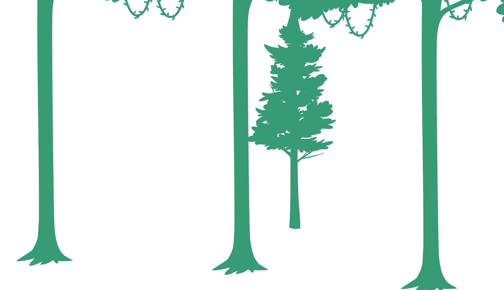
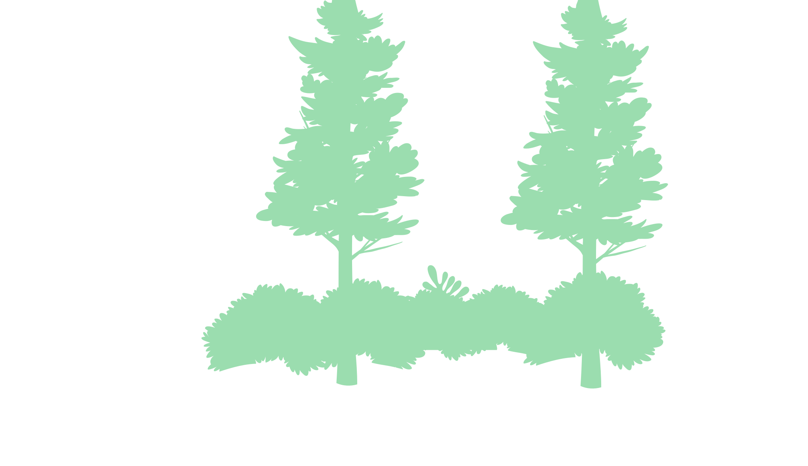
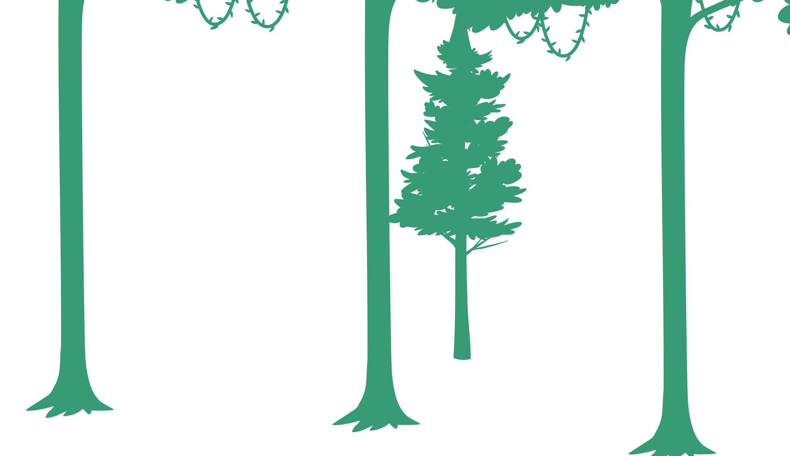
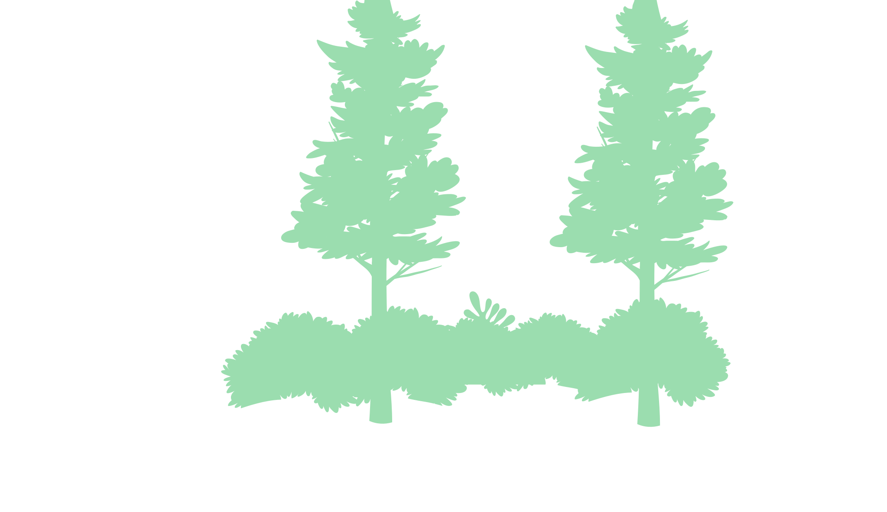
Mon entreprise
Rapide présentation de l'entreprise qui m'a accueilli en alternance
A propos de l'entreprise
A propos de l'entreprise
Aroma-Zone est une entreprise française spécialisée dans la vente de produits naturels pour la cosmétique maison, l'aromathérapie et le bien-être. Fondée en 1999, elle propose une large gamme d'huiles essentielles, d'huiles végétales, d'actifs cosmétiques et d'ingrédients DIY pour permettre à chacun de créer ses propres soins de beauté. Réputée pour son engagement en faveur du respect de l’environnement et de la transparence, Aroma-Zone est aujourd’hui une référence dans l’univers de la cosmétique naturelle et du fait-maison.
Réputée pour son engagement en faveur du respect de l’environnement et de la transparence, Aroma-Zone est aujourd’hui une référence dans l’univers de la cosmétique naturelle et du fait-maison.
Une entreprise en expansion
L'entreprise est implanté dans le sud de la France à Cabrière d'Avignon, en plus d'un site logistique à Chateauneuf-de-Gadagne et de nombreuses boutiques en France. Forte de son succès, elle a entammée depuis quelques années une politique d'expansion avec l'ouverture constante de nouvelles boutiques, la création de nouveaux sites logistiques ainsi que la traduction du site web en plusieurs langues étrangères, en plus de l'italien déjà présent.
 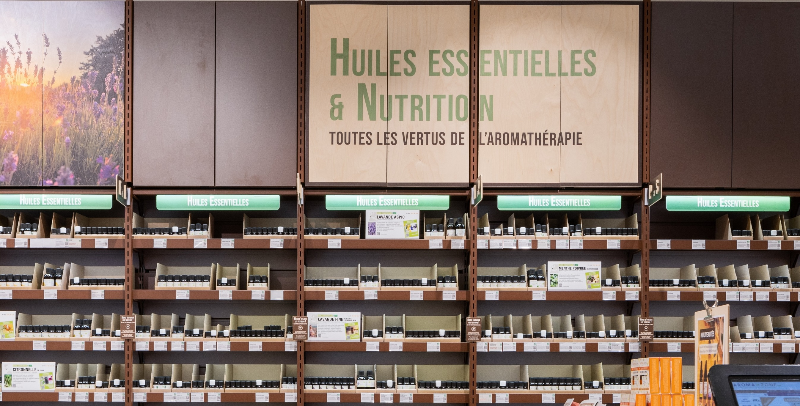
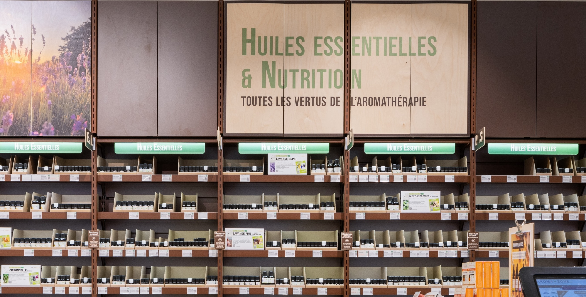
Pour répondre à ces défis, l'entreprise dispose notamment d'un pôle SI complet qui s'occupe de la maintenance et de l'évolution du site WEB ainsi que de la fourniture de solutions métiers performantes ou encore l'analyse de données.
C'est dans ce contexte que j'ai rejoins l'équipe de développement Back-End de l'entreprise afin de participer à la restructuration et l'optimisation des processus informatiques dans l'entreprise afin de soutenir son impressionnante croissance.
Réalisations professionnelles
Ensemble des réalisations que j'ai effectué, que ce soit en entreprise ou en cours de formation
Création de rapports de pilotage
Création de tableaux de bord pour permettre aux chefs d'équipes et aux différents managers du pôle logistique d'AROMA-ZONE d'avoir un visuel en temps réel sur les données relatives à l'envoi de commandes et la gestion des stocks.
Conception d'états
Création et mise à disposition d'états (étiquettes, bon de préparations...) pour le pôle logistique d'AROMA-ZONE
Outil d'import/export de contenu
Maintenance et amélioration d'un outil d'import/export développé en interne pour soutenir le processus de traduction de contenu du site web d'AROMA-ZONE.
Récupération dynamique de données
Récupération de données depuis plusieurs sources pour les afficher dans un service de suivi de projets, et automatisation du processus.
Application mobile Solaris Scanner
Création d'une application mobile de scan de QR code dans le contexte de mes projets de fin d'études
Création de rapports de pilotage
Stage de 1ère année
Compétences mobilisées
- Gérer des sauvegardes
- Déployer un service
- Collecter, suivre et orienter des demandes
- Traiter des demandes concernant les applications
- Réaliser les tests d’intégration et d’acceptation d’un service
- Accompagner les utilisateurs dans la mise en place d’un service
Vue d'ensemble
Cette mission a consisté en l'ajout de données clés à différents tableaux de bords utilisés dans le pôle logistique d'AROMA-ZONE, mais également à en créer de nouveaux. Ces tableaux sont à destination des différentes équipes opérationnelles pour lesquels ils doivent être personnalisés en fonction de leurs besoins. Ces rapports permettent de donner aux équipes une vision globale, en temps réel, sur plusieurs facteurs déterminants dans leur travail, pour ensuite pouvoir optimiser leurs actions et décisions en conséquence.
Ces enjeux m'ont donc permis de dialoguer avec les différentes équipes responsables de la logistique (préparation de commandes, gestion de stock, réception...) afin d'analyser leurs besoins et déterminer ce qui serait faisable et optimal.
Outils utilisés
Visual Studio (SSRS)
Au travers du plugin SSRS (SQL Server Reporting Service), Visual Studio est utilisé pour construire des rapports de données en mettant en forme le résultat de requêtes SQL, tout en pouvant y rajouter une logique d'affichage.
SQL Server Management Studio (SSMS)
SSMS est un logiciel qui permet de se connecter de manière sécurisé à une ou plusieurs bases de données SQL SERVER, et construire/exécuter des requêtes SQL vers ces bases.
Dans mon workflow pour cette mission, j'ai utilisé SSMS pour construire et tester rapidement mes requêtes SQL vers la base de donnée contenant l'ensemble des informations relatives à la logistique (stocks/emplacements disponibles, commandes en cours...), avant de les intégrer à mes différents rapports au sein de Visual Studio (qui est connecté à cette même base de donnée) pour construire la mise en page et la logique d'affichage des résultats. Les rapports ainsi créés peuvent ensuite être mis en ligne et peuvent être générés à tout moment, avec une donnée précise en temps réel.
Exemple de requête sur SSMS
Interface de construction de rapport SSRS
Travaux
Voici quelques uns des rapports sur lesquels j'ai travaillé, avec les différents ajouts effectués :
Rapport de retours par transporteurs (Créé)
Souhaitant minimiser les retours colis "inutiles", la direction du pôle logistique avait besoin d'un visuel plus précis sur la fiabilité des services postaux partenaires. Après échange avec les demandeurs, un rapport dynamique a donc été créé pour visualiser le nombre d'envoi et de retours colis sur une période à renseigner, filtrés par transporteurs, puis "sous-filtrés" par pays, ainsi qu'un taux de fiabilité. Ce rapport permet de repérer de potentielles failles ou faiblesses dans l'acheminement de colis pour certains transporteurs/destinations.
Rapport de capacité site logistique (Créé)
La place disponible étant cruciale pour un entrepôt logistique, pouvoir faire un état des lieux rapide manquait chez Aroma-Zone, les différents responsables devaient jusqu'alors grouper les informations manuellement dans Excel, un rapport a donc été créé pour palier à cela, renseignant sur le taux de remplissage de chaque zone du site, et ce en un clic et en temps réel.
Statistiques Missions (Modifié)
Ce rapport sert, pour les chefs des équipes affectées à la préparation de commande, à visualiser la répartition par type de commandes à préparer (standards, click&collect...), mais également à afficher le quota de missions réalisées par chaque employé ; Une séparation est aussi faite entre chaque équipe (AM/PM), Aroma-Zone pratiquant les 2-8 pour faire fonctionner le site de manière quasi-permanente. Jusqu'à mon arrivée, Ce rapport ne distinguait pas les commandes dites "Express" (XPR) et "XL", qui sont pourtant deux types de commandes qui nécéssitent un traitement particulier, surtout les secondes, qui nécéssitent un temps considérable à être préparées et peuvent impacter négativement le quota d'un opérateur. J'ai donc palié à ce problème en rajoutant les données adéquates au rapport conformément à une demande de longue date des chefs de ces équipes. Un peu plus tard (non visible ici), j'ai également rajouté la gestion d'une 3ème tranche horaire, lorsque l'entreprise est passé récemment d'un cycle 2-8 à un cycle 3-8.
Création d'états logistiques
Stage de 1ère année
Compétences mobilisées
- Collecter, suivre et orienter des demandes
- Traiter des demandes concernant les applications
- Évaluer les indicateurs de suivi d’un projet et analyser les écarts
- Réaliser les tests d’intégration et d’acceptation d’un service
- Déployer un service
Vue d'ensemble
Le pôle logistique d'AROMA-ZONE possède un logiciel de gestion de stock et de préparation de commandes (WMS) fourni par un prestataire, qui, au moment de mon stage, était en pleine évolution : plusieurs nouveaux modules étant en cours de conception. Pour accompagner ces nouvelles fonctionnalitées, le besoin de nouveaux états (étiquettes, feuilles de préparation de commandes...) s'est manifesté afin que les équipes métiers puissent pleinement tirer parti de ces avancées et de leurs spécificités. La mission de concevoir ces états m'a été confié.
Tout comme pour les rapports de pilotage, cette mission a nécéssité un dialogue constructif avec les différentes équipes afin de cerner correctement leurs besoins et y répondre au mieux.
Outils & utilisation
WinDev
WinDev est un environnement de développement rapide (RAD) conçu par PC Soft, permettant de créer des applications multiplateformes (Windows, web, mobile) avec un langage propriétaire, le WLanguage.
SQL Server Management Studio (SSMS)
SSMS est un logiciel qui permet de se connecter de manière sécurisé à une ou plusieurs bases de données SQL SERVER, et construire/exécuter des requêtes SQL vers ces bases.
Les états ont étés créés avec windev, et chaque état est relié à une requête SQL SERVER. Leur but est d'être appelés par le logiciel WMS lorsque l'impression d'une ou plusieurs données est nécéssaire ; chaque état possède un formalisme, une quantité d'information à afficher et un rôle précis associés à un certain type de données seulement.
J'ai concu mes états en partant d'autres pré-existants : ces derniers étants remplis de code propriétaires venant du prestataire, il aurait été difficile de tout reprendre de zéro, mes connaissances en WinDev étant de surcroît limitées. Mon rôle à simplement été de changer l'aspect graphique des états déja présent ainsi que la requête SQL associée et les données à afficher.
Le dialogue avec les équipes métiers s'est fait autour des données nécéssaires aux nouveaux états ainsi que sur le formalisme à adopter pour un affichage et une lisibilité la plus efficace possible.
Exemple de requête sur SSMS
Interface du logiciel WinDev
Travaux
Quelques uns des états que j'ai créé dans le contexte de cette mission :
Bon de préparation
A destination des équipes de préparations de commandes internes pour les boutiques d'Aroma-Zone, cet état renseigne les différents produits à préparer, ainsi que des informations sur leur conditionnement (type de cartons, etc) ; un code à barre est également présent pour procéder "informatiquement" à la préparation du produit au sein du module WMS affilié. Enfin, la boutique de destination est également renseignée.
La présence d'un tel bon de préparation au format papier était nécéssaire pour permettre, si besoin, aux différents opérateurs de se répartir le travail efficacement.
Etiquette support d'expédition
Après un remaniement du système d'expédition de palettes dans le logiciel WMS, un "support d'expédition" s'est retrouvé affecté à chaque palette, regroupant le contenu de celle ci (ce n'était pas le cas avant, le contenu était uniquement regroupé au niveau du chargement entier...). Ce nouveau fonctionnement permet une meilleure gestion des chargements, mais aucune étiquette à apposer sur ces palettes n'existait. J'ai donc remédié à cela, en renseignant le numéro de support d'expédition, la mission de préparation lui étant affilié, l'adresse cible ainsi que la référence de chargement.
Bon de livraison
Le bon de livraison était un élément crucial qui manquait à l'entreprise pour consigner l'ensemble du contenu d'un chargement dans un seul document. On retrouve ici la date d'expédition, l'adresse de livraison ainsi que la quantité de chaque produit présent dans le chargement et le nombre de palettes présentes. Ce document permet de faciliter la réception de ces chargements une fois arrivés à bon port, en s'assurant de l'intégrité de ceux ci.
Maintenance et évolution d'un outil de traduction
Alternance 2ème année
Compétences mobilisées
- Collecter, suivre et orienter des demandes
- Traiter des demandes concernant les applications
- Évaluer les indicateurs de suivi d’un projet et analyser les écarts
- Réaliser les tests d’intégration et d’acceptation d’un service
Vue d'ensemble
AROMA-ZONE a pour objectif de rendre accessible le site web de la marque en Anglais, Allemand et Espagnol, en plus de l'Italien déjà présent. Pour cela, l'entreprise a du mettre en place un processus de traduction fiable pour le contenu du site web. Au sein de ce processus, un outil d'import/export avait été développé pour exporter des données depuis le gestionnaire de contenu (CMS) utilisé par Aroma-zone (Contentful), les mettre à disposition des équipes de traduction, puis finalement les réimporter une fois traduites.
A mon arrivée, l'outil était déjà fonctionnel mais largement perfectible, certains problèmes alors difficile à identifier pouvant se produire à la phase d'export comme à l'import. La tâche m'a été confié de le faire fonctionner au rythme des différents "batchs" de contenus à traduire, en plus de le corriger et de l'améliorer, le but étant de me faire devenir le développeur "référent" concernant cet outil et son fonctionnement.
Outils & utilisation
Visual Studio Code
Visual studio code est un éditeur de texte avancé taillé pour le développement, Il sert ici a apporter des modifications et surtout faire fonctionner l'outil d'import/export.
PHP
PHP est un langage de programmation principalement utilisé dans le développement web pour gérer la partie back-end. il est ici utilisé avec les frameworks et librairies Symfony et API Platform.
JavaScript
Javascript est un langage de programmation principalement orienté web, en particulier pour la partie front-end, il reste cependant très polyvalent et va servir ici à effectuer quelques tâches de "formatage".
Contentful
Il s'agit d'un Gestionnaire de contenu (CMS) utilisé par AROMA-ZONE pour stocker et définir son contenu par types (page produit, page blog, page accueil...). Il offre la possibilité, pour chaque champ, de définir plusieurs langues, facilitant ainsi la gestion d'un site multilingue.
L'outil d'import export est majoritairement développé en PHP et s'utilise directement dans le logiciel d'édition de code (VSCode) au travers de lignes de commandes, il ne possède aucune interface utilisateur. Le contenu à traduire est donné à dans l'outil au travers d'une liste d'identifiants uniques Contentful fournis par l'équipe en charge du processus de traduction. Une commande permet de lancer l'export et de récuperer, après les avoir filtrées et formatées, les données sous forme de fichier unique (format .json) pour chaque page de contenu (une page produit par exemple). Les fichiers sont automatiquement transférés sur un serveur de fichier accessible par le prestataire en charge de la traduction. Après avoir été traduits, les fichiers sont récupérés manuellement et réinsérés dans un dossier spécifique au sein de l'outil, une commande est ensuite lancée pour réimporter les données traduites sur Contentful après avoir subit un second formatage (effectué en Javascript) pour rendre le format compatible avec les attentes de Contentful, et corriger certaines erreurs de traduction potentielles.
L'import et l'export se fait vers Contentful grace à des appels API (application programming interface) et un ensemble de méthode définies dans le SDK (software developpement kit) que contentful met à disposition des développeurs. Le format de données à respecter, surtout à l'import, est donc primordial pour pouvoir effectuer un ajout dans Contentful.
Interface de Contentful
Interface de l'outil de traduction
Travaux
Quelques unes des modifications/corrections que j'ai apporté à l'outil de traduction durant l'année :
Corriger les erreurs de formatage
Comme expliqué plus haut, avant de procéder au réimport du contenu vers Contentful, les fichiers traduits sont formatés pour êtres compréhensibles par l'API du gestionnaire de contenu (qui attend du texte au format "Markdown"), cette phase de formatage est effectuée avec le langage JavaScript, qui, au passage, vérifie l'intégrité de certaines données (slugs par exemple). J'ai ici apporté plusieurs modifications comme la suppression de certains caractères Allemands mals gérés lors de l'import, la vérification de l'intégrité des slugs, ou encore, comme présenté sur l'image ci-jointe, la bonne gestion des valeurs numériques et booléennes, qui avaient la fâcheuse tendance à être converties en texte, rendant leur intégration dans Contentful impossible.
Gestion approfondie des erreurs d'import
La plupart des erreurs rencontrées par l'outil se produisent lors de l'import de contenu. D'une part, la cause d'une erreur peut être très diverse, et il était à mon arrivée impossible de récupérer des informations détaillées sur les erreurs rencontrées, un simple message d'erreur sommaire était retourné (il fallait investiguer parfois longtemps pour trouver une piste...). D'autre part, si une erreur apparaissait, le message d'erreur s'affichait uniquement à l'instant ou l'erreur était rencontré, il n'existait pas de liste centralisant toutes les erreurs rencontrées durant un import, représentant encore du temps perdu. J'ai donc procédé à des modifications pour pouvoir afficher une liste des erreurs rencontrées durant un import à la fin de celui ci, en m'assurant au passage de récupérer un message d'erreur plus exhaustif, permettant de rapidement orienter les investigations.
Ajouts d'options de commandes
Initialement, les commandes par lesquelles étaient lancées les procédures d'import et d'export étaient assez simples et peu flexibles. On m'a demandé de rajouter certaines options à ces commandes afin de pouvoir mieux personnaliser ces procédures, pour qu'elles puissent s'adapter à différents cas de figures. Parmi ces options, je pense par exemple à la possibilitée de compacter les exports (initialement séparés en fichiers individuels) par paquets du nombre de notre choix, la possibilité d'ajouter lors de l'export les règles de format à respecter pour chaque champ (maximum de caractères, etc) ou encore, comme présenté ci-joint, la possibilité de désactiver certains processus tiers (webHook) durant les imports conséquents.
Utilisation de l'outil via API
En l'état initial des choses, l'outil n'était utilisable que par un développeur au travers de son éditeur de code, et même si les bases d'un fonctionnement par API avait déjà été intégré, cela n'a jamais été mis à profit. Un prestataire DevOps étrangé a donc été contacté pour déployer l'outil dans un conteneur sur une plateforme Cloud (Azure). L'avantage premier d'une telle approche est la possibilité, à terme, de pouvoir rendre l'utilisation de l'outil flexible et utilisable par "n'importe qui". Les ajouts d'options que j'ai effectué tout au long de l'année n'étant pas présente dans la structure initiale de l'API, j'ai du les intégrer pour permettre leur fonctionnement au travers d'une requête HTTP, en suivant les principes des outils API Platform et Doctrine disponibles dans le framework Symfony. Pour information, les données de requêtes effectuées par API sont stockées dans une base de donnée SQL qui fait office de file d'attente, les commandes correspondantes sont ensuite exécutées tour à tour avec les informations de la requête. Les tests pour ces requêtes ont étés effectués avec le logiciel Postman.
Optimisation de suivi du processus de traduction
Alternance 2ème année
Compétences mobilisées
- Collecter, suivre et orienter des demandes
- Traiter des demandes concernant les applications
- Évaluer les indicateurs de suivi d’un projet et analyser les écarts
- Réaliser les tests d’intégration et d’acceptation d’un service
Vue d'ensemble
Dans le contexte de la traduction de son site web, Aroma-Zone a mis en place un processus complet concernant la traduction du contenu du site web. Cette traduction s'effectue par "batchs", ces derniers comprenant certaines pages à traduire choisies par les responsables du projet à un instant T. Pour assurer le suivi de ces batchs ainsi que de l'état de chaque page, les équipes concernées utilisent plusieurs fichiers Excels ou Google Docs partagés remplis intégralement à la main, et sans avoir de vrai "lieu de référence" où observer le suivi des évenements.
Exemple d'un google docs utilisé
Un POC (Proof of concept) a donc été demandé pour tenter d'aggréger les données de contenu provenant des différents outils/services utilisées dans le processus de traduction au service en ligne qu'Aroma-Zone utilise pour suivre l'avancement de missions/projets au global : Monday, et qui est bien mieux adapté à un usage collectif (possibilité de filtrer, effectuer des recherches sans affecter l'exeperience des autres, etc).
Outils & utilisation
![]()
Monday
Monday est une plateforme de gestion de projet et de travail collaboratif en ligne. Elle permet aux équipes d'organiser, suivre et automatiser leurs tâches via des tableaux personnalisables et des intégrations avec d'autres outils.
Azure Logic Apps
Les Logic Apps sont une solution logicielle proposé par Microsoft Azure pour créer, et déployer des processus rapidement en se basant sur une logique de No/Low-Code.
Contentful
Il s'agit d'un Gestionnaire de contenu (CMS) utilisé par AROMA-ZONE pour stocker et définir son contenu par types (page produit, page blog, page accueil...). Il offre la possibilité, pour chaque champ, de définir plusieurs langues, facilitant ainsi la gestion d'un site multilingue.
API
Une API est une interface de programmation qui permet à différents services/applications d'interagir entre eux au travers de requêtes HTTP. les API de Contentful et Monday sont ici utilisées au sein des logic apps.
L'outil d'import export est majoritairement développé en PHP et s'utilise directement dans le logiciel d'édition de code (VSCode) au travers de lignes de commandes, il ne possède aucune interface utilisateur. Le contenu à traduire est donné à dans l'outil au travers d'une liste d'identifiants uniques Contentful fournis par l'équipe en charge du processus de traduction. Une commande permet de lancer l'export et de récuperer, après les avoir filtrées et formatées, les données sous forme de fichier unique (format .json) pour chaque page de contenu (une page produit par exemple). Les fichiers sont automatiquement transférés sur un serveur de fichier accessible par le prestataire en charge de la traduction. Après avoir été traduits, les fichiers sont récupérés manuellement et réinsérés dans un dossier spécifique au sein de l'outil, une commande est ensuite lancée pour réimporter les données traduites sur Contentful après avoir subit un second formatage (effectué en Javascript) pour rendre le format compatible avec les attentes de Contentful, et corriger certaines erreurs de traduction potentielles.
L'import et l'export se fait vers Contentful grace à des appels API (application programming interface) et un ensemble de méthode définies dans le SDK (software developpement kit) que contentful met à disposition des développeurs. Le format de données à respecter, surtout à l'import, est donc primordial pour pouvoir effectuer un ajout dans Contentful.
Interface de Contentful
Interface de l'outil de traduction
Travaux
Quelques unes des modifications/corrections que j'ai apporté à l'outil de traduction durant l'année :
Corriger les erreurs de formatage
Comme expliqué plus haut, avant de procéder au réimport du contenu vers Contentful, les fichiers traduits sont formatés pour êtres compréhensibles par l'API du gestionnaire de contenu (qui attend du texte au format "Markdown"), cette phase de formatage est effectuée avec le langage JavaScript, qui, au passage, vérifie l'intégrité de certaines données (slugs par exemple). J'ai ici apporté plusieurs modifications comme la suppression de certains caractères Allemands mals gérés lors de l'import, la vérification de l'intégrité des slugs, ou encore, comme présenté sur l'image ci-jointe, la bonne gestion des valeurs numériques et booléennes, qui avaient la fâcheuse tendance à être converties en texte, rendant leur intégration dans Contentful impossible.
Gestion approfondie des erreurs d'import
La plupart des erreurs rencontrées par l'outil se produisent lors de l'import de contenu. D'une part, la cause d'une erreur peut être très diverse, et il était à mon arrivée impossible de récupérer des informations détaillées sur les erreurs rencontrées, un simple message d'erreur sommaire était retourné (il fallait investiguer parfois longtemps pour trouver une piste...). D'autre part, si une erreur apparaissait, le message d'erreur s'affichait uniquement à l'instant ou l'erreur était rencontré, il n'existait pas de liste centralisant toutes les erreurs rencontrées durant un import, représentant encore du temps perdu. J'ai donc procédé à des modifications pour pouvoir afficher une liste des erreurs rencontrées durant un import à la fin de celui ci, en m'assurant au passage de récupérer un message d'erreur plus exhaustif, permettant de rapidement orienter les investigations.
Ajouts d'options de commandes
Initialement, les commandes par lesquelles étaient lancées les procédures d'import et d'export étaient assez simples et peu flexibles. On m'a demandé de rajouter certaines options à ces commandes afin de pouvoir mieux personnaliser ces procédures, pour qu'elles puissent s'adapter à différents cas de figures. Parmi ces options, je pense par exemple à la possibilitée de compacter les exports (initialement séparés en fichiers individuels) par paquets du nombre de notre choix, la possibilité d'ajouter lors de l'export les règles de format à respecter pour chaque champ (maximum de caractères, etc) ou encore, comme présenté ci-joint, la possibilité de désactiver certains processus tiers (webHook) durant les imports conséquents.
Utilisation de l'outil via API
En l'état initial des choses, l'outil n'était utilisable que par un développeur au travers de son éditeur de code, et même si les bases d'un fonctionnement par API avait déjà été intégré, cela n'a jamais été mis à profit. Un prestataire DevOps étrangé a donc été contacté pour déployer l'outil dans un conteneur sur une plateforme Cloud (Azure). L'avantage premier d'une telle approche est la possibilité, à terme, de pouvoir rendre l'utilisation de l'outil flexible et utilisable par "n'importe qui". Les ajouts d'options que j'ai effectué tout au long de l'année n'étant pas présente dans la structure initiale de l'API, j'ai du les intégrer pour permettre leur fonctionnement au travers d'une requête HTTP, en suivant les principes des outils API Platform et Doctrine disponibles dans le framework Symfony. Pour information, les données de requêtes effectuées par API sont stockées dans une base de donnée SQL qui fait office de file d'attente, les commandes correspondantes sont ensuite exécutées tour à tour avec les informations de la requête. Les tests pour ces requêtes ont étés effectués avec le logiciel Postman.
Application mobile Solaris Scanner
En cours de formation
Compétences mobilisées
- Collecter, suivre et orienter des demandes
- Traiter des demandes concernant les applications
- Évaluer les indicateurs de suivi d’un projet et analyser les écarts
- Réaliser les tests d’intégration et d’acceptation d’un service
Vue d'ensemble
Dans le cadre de mon BTS, j'ai du créer une solution applicative dite "client lourd", c'est à dire ayant du code s'éxécutant localement. J'ai choisi de développer une application mobile Android qui entrerait en synergie avec mon second projet d'étude : le site web d'un cinéma (fictif) : Le cinéma Solaris. Cette application consiste en une solution pratique à destination des employés du cinéma pour valider les réservations client. Elle se base sur un QR code représentant la reservation que le client présentera à l'employé, qui le scannera pour valider ou "composter" virtuellement la réservation, ou constater un potentiel défaut concernant la réservation.
Les principaux enjeux ont été les modalités d'accès à la base de donnée du site web depuis un appareil mobile et l'intégration d'une solution de scan de QR code.
Outils & utilisation
%20--%3e%3csvg%20version='1.0'%20id='katman_1'%20x='0px'%20y='0px'%20viewBox='0%200%20512%20512'%20xml:space='preserve'%20sodipodi:docname='JetBrains%20Rider%20Icon.svg'%20width='512'%20height='512'%20inkscape:version='1.1.1%20(3bf5ae0d25,%202021-09-20)'%20xmlns:inkscape='http://www.inkscape.org/namespaces/inkscape'%20xmlns:sodipodi='http://sodipodi.sourceforge.net/DTD/sodipodi-0.dtd'%20xmlns:xlink='http://www.w3.org/1999/xlink'%20xmlns='http://www.w3.org/2000/svg'%20xmlns:svg='http://www.w3.org/2000/svg'%3e%3cdefs%20id='defs43'%20/%3e%3csodipodi:namedview%20id='namedview41'%20pagecolor='%23505050'%20bordercolor='%23ffffff'%20borderopacity='1'%20inkscape:pageshadow='0'%20inkscape:pageopacity='0'%20inkscape:pagecheckerboard='1'%20showgrid='false'%20inkscape:zoom='1.0980553'%20inkscape:cx='256.36233'%20inkscape:cy='212.19333'%20inkscape:window-width='1920'%20inkscape:window-height='1027'%20inkscape:window-x='-8'%20inkscape:window-y='22'%20inkscape:window-maximized='1'%20inkscape:current-layer='katman_1'%20/%3e%3cstyle%20type='text/css'%20id='style2'%3e%20.st0{fill:url(%23SVGID_1_);}%20.st1{fill:url(%23SVGID_00000130622934180993703410000017420799098261276343_);}%20.st2{fill:url(%23SVGID_00000060739771362873723200000017991140373209755022_);}%20.st3{fill:%23FFFFFF;}%20%3c/style%3e%3csymbol%20id='rider'%20viewBox='-35%20-35%2070%2070'%3e%3clinearGradient%20id='SVGID_1_'%20gradientUnits='userSpaceOnUse'%20x1='30.4897'%20y1='5.1188998'%20x2='-23.4683'%20y2='-25.8451'%3e%3cstop%20offset='0'%20style='stop-color:%23DD1265'%20id='stop4'%20/%3e%3cstop%20offset='0.483'%20style='stop-color:%23DD1265'%20id='stop6'%20/%3e%3cstop%20offset='0.942'%20style='stop-color:%23FDB60D'%20id='stop8'%20/%3e%3c/linearGradient%3e%3cpath%20class='st0'%20d='M%2035,-7.7%20-14.1,-35%2018.8,13.9%2025.5,9.5%20Z'%20id='path11'%20/%3e%3clinearGradient%20id='SVGID_00000169517474296634577950000016895268102491994795_'%20gradientUnits='userSpaceOnUse'%20x1='-1.5839'%20y1='-28.888'%20x2='19.805099'%20y2='30.174999'%3e%3cstop%20offset='0.139'%20style='stop-color:%23087CFA'%20id='stop13'%20/%3e%3cstop%20offset='0.476'%20style='stop-color:%23DD1265'%20id='stop15'%20/%3e%3cstop%20offset='0.958'%20style='stop-color:%23087CFA'%20id='stop17'%20/%3e%3c/linearGradient%3e%3cpath%20style='fill:url(%23SVGID_00000169517474296634577950000016895268102491994795_)'%20d='M%2015.5,-18.9%209.3,-33.9%20-4.3,-20.5%201.2,28.1%2014.4,35%2035,23%20Z'%20id='path20'%20/%3e%3clinearGradient%20id='SVGID_00000135668350575375336630000014638141720088491653_'%20gradientUnits='userSpaceOnUse'%20x1='-17.5865'%20y1='-27.071199'%20x2='-1.7875'%20y2='29.073799'%3e%3cstop%20offset='0.278'%20style='stop-color:%23DD1265'%20id='stop22'%20/%3e%3cstop%20offset='0.968'%20style='stop-color:%23FDB60D'%20id='stop24'%20/%3e%3c/linearGradient%3e%3cpath%20style='fill:url(%23SVGID_00000135668350575375336630000014638141720088491653_)'%20d='m%20-14.1,-35%20-20.9,14.1%207.8,48.1%2020.1,7.7%2026,-21%20z'%20id='path27'%20/%3e%3cpath%20d='M%2021,-21%20H%20-21%20V%2021%20H%2021%20Z'%20id='path29'%20/%3e%3cpath%20class='st3'%20d='m%20-0.6,13.6%20h%20-15.8%20v%202.7%20h%2015.8%20z'%20id='path31'%20/%3e%3cpath%20class='st3'%20d='m%200.5,-15.8%20h%206.2%20c%205,0%208.4,3.4%208.4,7.7%200,4.4%20-3.4,7.9%20-8.4,7.9%20L%200.5,0%20Z%20m%203.5,3.2%20v%209.5%20h%202.7%20c%202.8,0%204.8,-1.9%204.8,-4.6%200,-2.8%20-1.9,-4.7%20-4.8,-4.7%20z'%20id='path33'%20/%3e%3cpath%20class='st3'%20d='m%20-15.7,-15.8%20h%207.2%20c%202,0%203.5,0.6%204.6,1.6%200.9,0.9%201.3,2.1%201.3,3.6%20v%200.1%20c%200,1.3%20-0.3,2.3%20-0.9,3.1%20-0.6,0.8%20-1.4,1.4%20-2.4,1.8%20L%20-2,0%20h%20-4.1%20l%20-3.3,-4.8%20h%20-2.9%20V%200%20h%20-3.5%20z%20m%207,7.7%20c%200.8,0%201.5,-0.2%202,-0.6%200.5,-0.4%200.7,-1%200.7,-1.6%20v%20-0.1%20c%200,-0.8%20-0.2,-1.3%20-0.7,-1.7%20-0.5,-0.3%20-1.1,-0.6%20-2,-0.6%20h%20-3.4%20v%204.5%20h%203.4%20z'%20id='path35'%20/%3e%3c/symbol%3e%3cuse%20xlink:href='%23rider'%20width='70'%20height='70'%20x='-35'%20y='-35'%20transform='matrix(7.0682519,0,0,7.2481031,256,256)'%20style='overflow:visible'%20id='use38'%20/%3e%3c/svg%3e)
JetBrains Rider
Rider est un IDE (Environnement de Developpement Intégré) concu pour la plateforme .NET et le développement en C#, le langage que j'ai choisi pour ce projet.
C#
C# est un language de programmation développé par Microsoft, il est approprié pour le developpement d'applications natives et multiplateformes.
.NET MAUI
.NET MAUI est un framework qui facilite le développement d'applications multiplateformes en se basant sur le langage C# et le langage d'interface utilisateur XAML.
API
Une API est une interface de programmation qui permet à différents services/applications d'interagir entre eux au travers de requêtes HTTP. Cela permettra ici à l'application mobile de dialoguer avec le serveur hébergeant le site web solaris et sa base de donnée.
L'application a donc été développée dans RIDER en utilisant le framework .NET MAUI et le duo C# et XAML, en essayant de respecter au mieux le paradigme de développement MVVM (Model View ViewModel). Ce choix a été fait suite à l'étude de C# pour m'initier à la programmation orienté objet durant ma formation. Un smartphone android a été utilisé pour assurer les tests de fonctionnement de la solution.
L'application reste relativement simple de conception avec seulement 3 pages/fenêtres qui seront détaillées plus bas :
- page de connexion
- page de scan
- page de résultat
Code C#
Code XAML
Détails
Page de connexion
Cette vue constitue le point d'entrée de l'application, elle invite l'utilisateur à entrer son identifiant et mot de passe. Une fois le bouton de connexion déclenché, une requête API est envoyée avec les données d'identification (le mot de passe est haché) au site web Solaris qui va procéder à une verification (si l'utilisateur existe et possède les autorisations adéquates). Si la connexion est autorisée, un jeton (token) de connexion est renvoyé à l'application, ce qui lui permettra d'effectuer d'autres requêtes vers le site web Solaris. De plus ce jeton fera office de témoin de connexion, évitant à l'utilisateur d'avoir à se reconnecter pendant une durée de 1H après la connexion, et ce même si l'application est fermée.
Page de Scan
Cette page devient la page d'accueil de l'application une fois l'utilisateur connecté. Elle est relié à la caméra de l'appareil et utilise une extension pour .NET MAUI spécialisée dans la détection de QR CODE : BarcodeScanning. Plusieurs options sont à la disposition de l'utilisateur : l'activation du flash et le mode "auto-scan" (initialement, il est besoin de cliquer sur le bouton central pour activer le scan). En cas de détection d'un QR Code, les données que contiennent celui ci vont être récupérées et l'application va rediriger l'utilisateur vers la page de résultat, qui s'occupera d'effectuer une requête de validation et d'afficher le résultat.
Page de résultat
La page de résultat apparait une fois qu'un scan a été effectué, elle est donc chargée avec les données relative au scan en question. Elle va en premier lieu effectuer une requête API pour vérifier l'intégrité et la validité de la valeur du QR Code soumis, et afficher le résultat correspondant, cette requête ne pourra fonctionner sans le jeton de connexion obtenu lors de la connexion à l'application. Si le contenu du QR code n'est pas un identifiant de réservation, un message d'erreur générique sera affiché, invitant l'utilisateur à retourner à la page de scan. Si la réservation existe, plusieurs vérifications seront faites côté serveur : si la réservation n'a pas été annulée ou déjà "compostée" et si l'heure de scan n'est pas trop en avance par rapport à la séance ; dans le premier cas, un message d'avertissement sera retourné avec les détails de l'erreur et dans le second cas, une invitation à réiterer la validation plus tard sera retournée. Dans le cas ou tout est en règle, les informations utiles sont retournées pour être affichées : nom du film, nombre de places sur la réservation, date et heure de la séance ainsi que le numéro de salle.
Veille Technologique
Dans le domaine informatique, la veille technologique est primordiale : Elle nous permet de rester au courant des dernières avancées sur nos domaines de compétences, afin de les intégrer à notre workflow et rester ainsi à la pointe du progrès !
Cependant, suivre toutes les dernières actualités peut être compliqué mais heureusement, certains outils peuvent nous faciliter la vie.
Je vous présente ici l'outil que j'utilise pour rester alerte, ainsi que la facon dont je m'en sert :
FEEDLY.
Feedly est un outil qui permet de selectionner divers themes ou sources, et d'etre notifié dès qu'une nouveauté apparait sur notre séléction.
Comment ça marche ?
Pour utiliser Feedly, il faut tout d'abord se créer un compte sur le site web, ensuite, nous pouvons séléctionner des sources/centres d'intêrets, et les classer librement par dossiers.
Le service dispose d'une offre gratuite et payante, l'offre gratuite limitant le nombre de rubriques possible, et n'autorisant pas l'accès aux fonctionnalités "IA" (agrégation des news par centre d'interêts) entre autres que le site propose...
Mon organisation.
j'ai organisé ma veille au travers de 4 rubriques, regroupant chacunes plusieurs sources sur un theme bien particulier, voyons en détails :
.Langages & Frameworks
.Cybersécurité
.Software & OS
.Actus Tech en général
Mon sujet
J'ai décidé de choisir Le framework Laravel comme sujet de veille technologique, un framework PHP que j'ai grandement utilisé au cours de ma formation.
Laravel est un framework PHP conçu autour d'une architecture MVC, il intègre plusieurs outils performant pour faciliter le développement d'applications web (ORM Eloquent, Blade, Laravel Livewire, etc).
Laravel a été créé en 2011 par Taylor Otwell. Au fil de ses évolutions, il a su devenir un des frameworks les plus populaires et apprécié pour le développement web et a participé au regain d'intérêt général pour le language PHP.
Laravel 12
Laravel 12 est la dernière version en date du framework, et est sortie officiellement le 24 février 2025. J'ai choisi de concentrer ma veille technologique dessus.
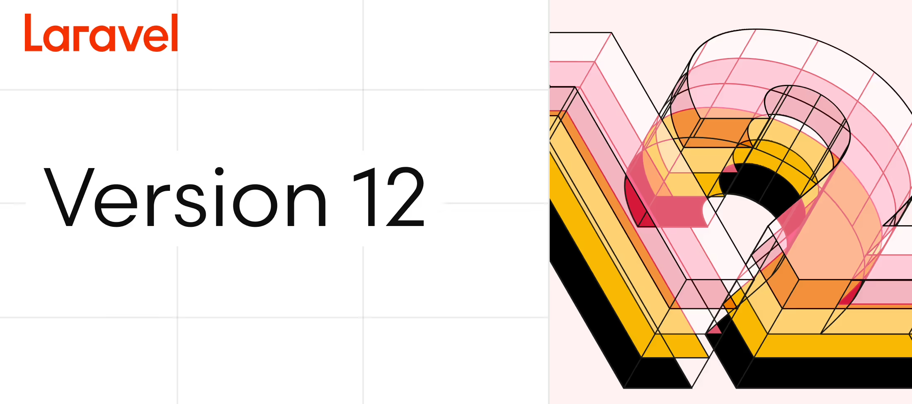Tour d'horizon des nouveautés
- La maintenance est simplifié, voir inexistante : Le prestataire gère les cas d'indisponibilité.
- Le coût est bien souvent inférieur : Le coût est basé sur notre usage et non sur notre infrastructure.
- La scalabilité est facile : On peut facilement augmenter les performances requises pour un service.
- Travail collaboratif et accessibilité : l'accès aux ressources est simplifié, car tout se fait via l'interface du prestataire.
- Simplification de la gestion et du déploiement des ressources : On peut facilement gérer les ressources de maniére centralisée et simplifiee, grâce à un fort taux d'abstraction de l'infrastructure (SaaS, PaaS, IaaS).
Mise en application de Laravel 12
J'ai réalisé un POC de migration vers laravel 12 de mon projet de fin d'étude (le site web cinemasolaris.fr), qui a été développé en Laravel 11, en y intégrant l'authentification tierce.
L'aspect PaaS des logic apps rends en outre leur création et leur utilisation quasi-instantané, sans préoccupation de l'infrastructure et du déploiement.
Je me sert essentiellement d'un service en particulier proposé par Azure : Les Logic Apps qui permettent d'automatiser des tâches, des processus ou des flux de données en utilisant du low-code, et ce, très facilement. L'avantage ici est la clarté du code, qui, ressemblant à un logigramme, ne nécéssite pas de connaissances sur un language particulier.
L'aspect PaaS des logic apps rends en outre leur création et leur utilisation quasi-instantané, sans préoccupation de l'infrastructure et du déploiement.

Me contacter
Vous pouvez me contacter par mail, via mes réseaux sociaux, ou en remplissant le formulaire ci-dessous !